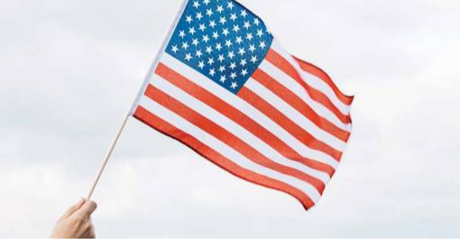

- Главная /
- Полезные статьи /
- Виза в США О-1 для творческих людей: так ли все просто?
Виза в США О-1 для творческих людей: так ли все просто?
Виза для талантливых людей (О) – один из наиболее удобных способов попасть в США тем, у кого есть достижения в искусстве, науке, бизнесе, образовании, спорте, которые признаны на национальном или международном уровне. Виза О не является иммиграционной. По сути, это рабочая виза, получение которой не предполагает никаких квот, как в случае с рабочей визой (Н), а количество продлений не ограничено. Но не все так просто.

Виды виз типа О для талантливых людей
- O-1A выдается людям с выдающимися способностями в науке, образовании, бизнесе или спорте (кроме сферы искусства, кино или телевидения);
- O-1B получают лица с выдающимися достижениями в искусстве, кино- или телеиндустрии;
- O-2 могут получить лица, сопровождающие артиста или спортсмена с визой O-1 в качестве ассистента;
- O-3 доступна супругам и детям обладателей виз O-1 и O-2.
Что значит обладать признанием и выдающимися способностями?
- Обладать редкими способностями в науке, образовании, бизнесе или спорте, указывающими на то, что вы относитесь к малому проценту тех, кто находится на вершине в данной сфере;
- Отличаться от других представителей в вашей сфере деятельности, быть редким специалистом, который выигрывает на фоне коллег;
- Иметь достижения, подтверждающие вашу уникальность и признание в профессиональном сообществе на национальном и международном уровнях.
- Не бояться того, что вы не подходите. Всех обескураживает описание к данной визе, где приводится пример таких наград, как «Оскар» или Нобелевская премия.
На самом деле критерии для претендентов на визу О значительно шире, что позволяет переехать в США и музыкантам, и художникам, и дизайнерам, и программистам.
Кто может получить визу О-1?
Если вы не получили Нобелевскую премию или «Оскар», нужно соответствовать как минимум по трем критериям. На практике же юристы советуют собирать документы по максимально возможному количеству критериев. Вот они:
Два недостатка визы для талантливых людей: дорого и долго
Получить визу О не так сложно. Подавать документы можно в любое время года, нет требований к уровню образования и не обязательно иметь приглашение от конкретной компании в США, поскольку в качестве приглашающей стороны может быть физическое лицо. Вместе с тем, виза для талантливых людей является дорогим удовольствием: пошлины за рассмотрение заявки, визу и услуги юристов обойдутся в $5,000-10,000.
Самый сложный этап – сбор документов, когда каждый из них должен быть проверен юристами и заверен. Например, заявка музыканта Петра Р. составила 350 страниц, а журналистки Анны В.– более 600. В среднем, у соискателей уходит от 6 до 18 месяцев на сбор необходимых бумаг.
Самый сложный этап – сбор документов, когда каждый из них должен быть проверен юристами и заверен. Например, заявка музыканта Петра Р. составила 350 страниц, а журналистки Анны В.– более 600. В среднем, у соискателей уходит от 6 до 18 месяцев на сбор необходимых бумаг.
На что обратить особое внимание при подаче заявки на визу О-1?
Чек-лист при подаче документов на визу О-1